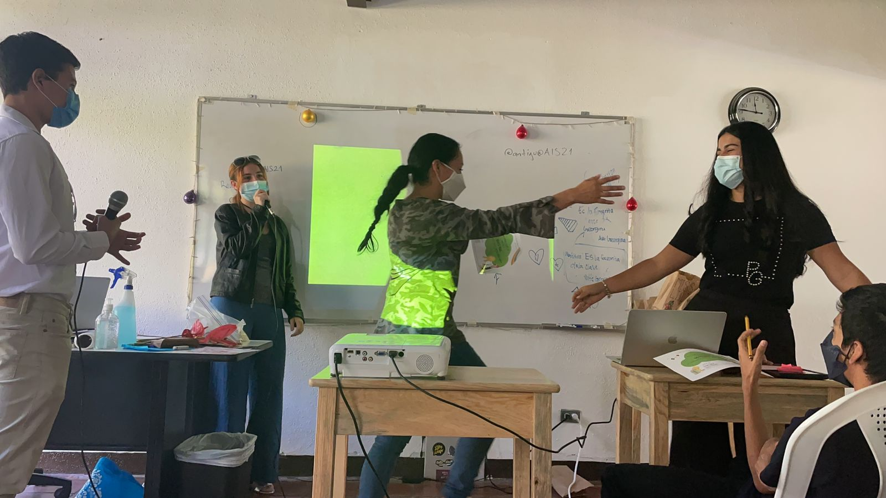

Deportes
Meastra: Miss Georgina
El pasatiempo favorito de Miss Georgina es hacer deporte
Los animales de preferencia son: Perros y cabras
El recuerdo es: A los 4 años la llevaron al colegio, no se quería quedar entonces ensució su vestido.
Quetzaltenango.
Novelas históricas y sobre la Segunda Guerra Mundial.
El amor a Dios, el amor a familia, y el amor a mis alumnos.
Ambas
En escuelas públicas, construcción, cocinas, también con niñas y adolescentes por rehabilitación en pandillas. Luego de eso en trabajo de niñas madres y en trata de personas de USA.
Me inspiran mis alumnos porque tienen mucho que dar y a veces no creen en si mismos.
Un legado espiritual.
| ¿Comida favorita? | Música | Artista favorito | Gustos de vehiculos. | Materia que mas le gusto cuando estudio. | Materia que fue un reto. |
|---|---|---|---|---|---|
| Mariscos | Todo de los 80 a los 90 | Chris Hemsworth | Compactos | Historia | Matemática |
| Chilaquiles | Música Cristiana | Leonardo DiCaprio | Camiontas Chevrolet | Literatura | Física Fundamental |
Raza de Perros Favorita: